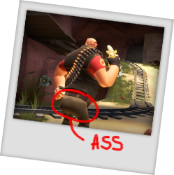

Welcome to the oasis!
stay a while, mi casa es su casa.
This server attempts to loosely recreate the early-to-mid 2010s TF2 community server experience.
- Can't see sprays? Try enabling them through the console with the command: cl_spraydisable 0
This server currently features:
- Classic weapon pickups (dropped weapons = ammo)
- Ullapool Caber tauntkills
- Pre-Jungle Inferno Sandman Bonk!
- Thirdperson: !tp/!thirdperson, !fp/!firstperson
..And much more!
Rules
blah, blah, blah
By playing on this server you automatically agree to our rules.
This server has a set of rules in place to keep the community safe and to keep the server somewhat civil.
Blah, blah, blah, if you break a rule you'll be warned, and if you repeat your offense after two times, you'll be banned.
Ban evasion will result in an immediate IP-Ban.
..But my sibling/friend used my account to break the rules!
If true, that's unfortunate, however if your account is the rulebreaker in question, then your account gets the correct punishment acorrdingly despite the person behind it.
- No NSFW sprays, keep that at home, you freak.
- No cheating, map exploits are fair game, however actual game exploits (that do not center around the map) are not allowed.
- Do not harass other players.
- No text spamming.
- Keep advertising to a minimum and on-platform (meaning promotion of another TF2 server is allowed), however if the only messages you're sending is advertisements then action will be taken.
- No scamming.
- Do not votekick players who kill friendlys, this is a FPS game, not a sandvich simulator.
- No toxicity.
Want to play immediately without the hassle of typing a command?
Featuring..
The Instant-Play Button!
Join!Just click and join!